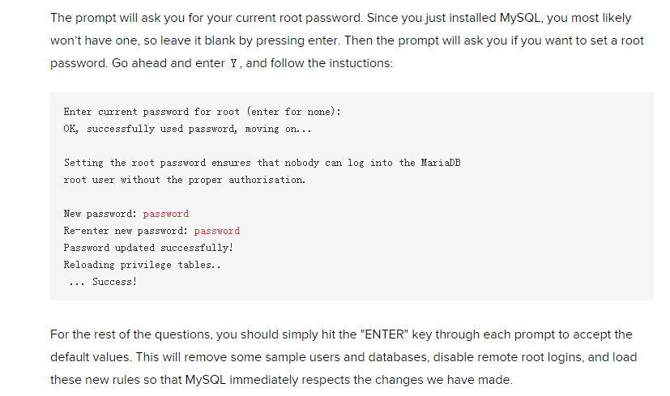
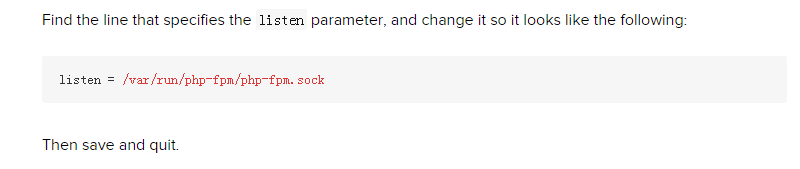

Radis
# wget http://download.redis.io/releases/redis-3.0.1.tar.gz
# tar xzvf redis-3.0.1.tar.gz
# cd redis-3.0.1
# make
# make install

# cd utils
# ./install_server.sh

开启端口:
# firewall-cmd --zone=public --add-port=6379/tcp --permanent
# firewall-cmd --reload
# **semanage port -a -t ssh_ port _t -p tcp 6379**
Nginx
# rpm -Uvh http://nginx.org/packages/centos/7/noarch/RPMS/nginx-release-centos-7-0.el7.ngx.noarch.rpm
# yum install nginx
# systemctl start nginx.service
# systemctl enable nginx
Memcached
# yum install memcached
# systemctl start memcached
# systemctl enable memcached
开启端口:
# firewall-cmd --zone=public --add-port=11211/tcp --permanent
# firewall-cmd --reload
# **semanage port -a -t ssh_ port _t -p tcp 11211**
MariaDB
在 /etc/yum.repos.d 下添加一文件：MariaDB.repo，内容如下：
[mariadb]
name = MariaDB
baseurl = http://yum.mariadb.org/10.0/centos6-amd64
gpgkey=https://yum.mariadb.org/RPM-GPG-KEY-MariaDB
gpgcheck=1
# yum clean all
# yum install mariadb-server mariadb
# systemctl start mariadb
# mysqlsecureinstallation

# systemctl enable mariadb
登入MariaDB，创建远程登入用户，为方便测试，给予最高权限：
# mysql -u root -p
# 'yourpassword'
# use mysql;
# grant all privileges on . to 'myuser'@'%' identified by 'mypassword' with grant option;
# flush privileges;
PHP
# yum install php php-mysql php-fpm
# vi /etc/php.ini

# vi /etc/php-fpm.d/www.conf

# systemctl start php-fpm
# systemctl enable php-fpm
vsFtpd
# yum -y install vsftpd
编辑 vsftpd 的配置文件
# vi /etc/vsftpd/vsftpd.conf
Disallow anonymous, unidentified users to access files via FTP; change the anonymous_enable setting to NO :
# anonymous_enable=NO
Allow local uses to login by changing the local_enable setting to YES:
# local_enable=YES
If you want local user to be able to write to a directory, then change the write_enable setting to YES:
# write_enable=YES
Local users will be ‘chroot jailed’ and they will be denied access to any other part of the server; change the chrootlocaluser setting to YES:
# chrootlocaluser=YES
Exit and save the file with the command :wq .
重启vsftpd
# systemctl restart vsftpd
设置自启动项
# systemctl enale vsftpd
# firewall-cmd --zone=public --add-port=21/tcp --permanent
# firewall-cmd --reload